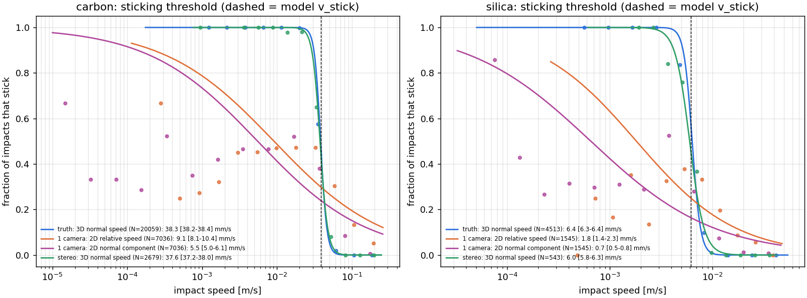
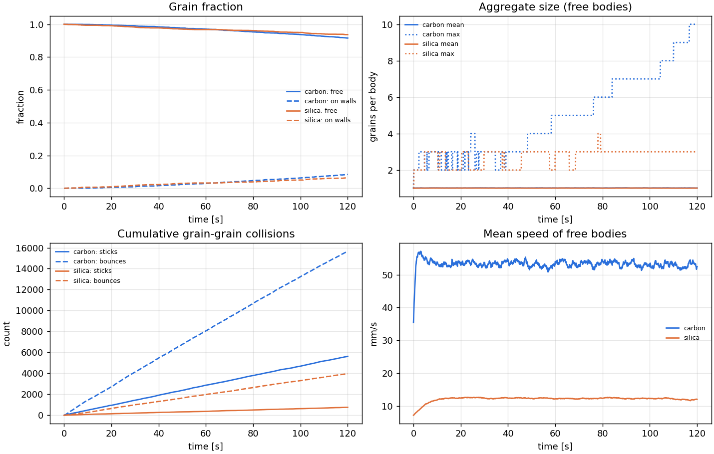
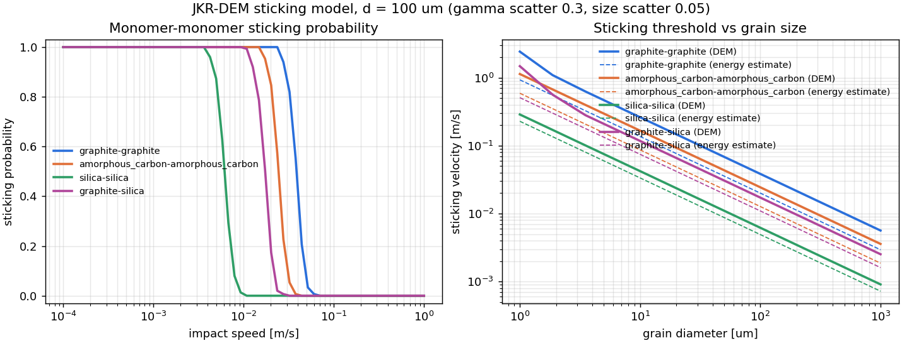

DOLL-E: Dust Observations in Low-gravity and Low-pressure Environments
An open simulator for ~100 µm dust grains colliding in microgravity inside a low-pressure chamber on a NASA RockSat sounding rocket (University of Chicago). It predicts at what impact velocity astrophysically relevant grains (carbon vs. silicates) stick, and whether the payload can measure it.
What it simulates
Grains and impacts
Every grain and aggregate is a spinning rigid body. Each impact is resolved by integrating the adhesive JKR contact law with plastic yield (Thornton & Ning) and viscoelastic damping at nanosecond resolution, so stick or bounce, restitution, charging and fragmentation all come out of the contact mechanics. Aggregates grow, spin, erode and shatter.The flight environment
Residual microgravity and g-jitter (or a flight IMU file), 1 rpm payload roll (centrifugal and Coriolis), tidal gravity, gas drag and torque, Brownian motion, thermophoresis, photophoresis, radiation pressure, Coulomb forces with the long-range space-charge field, polarisation, image charges, Lorentz force and contact charging. Anti-stick, vibrating walls.The measurement
A synthetic camera decides which impacts the payload would record, adds centroiding noise, and fits the sticking threshold with error bars. It compares one camera against stereo cameras, so you can size the optics before building hardware.Verified
16 benchmarks against analytic solutions and conservation laws run in your browser (Verify tab). The engine is also cross-checked against the independent REBOUND N-body code, and v0.2 went through an adversarial physics review.Results from the full mission simulation
2 chambers × 2000 grains, 120 s, 1 Pa, 1e-4 g, 1 rpm roll, all forces on (desktop run).

Fraction of impacts that stick vs impact speed. Blue: truth. Green: stereo cameras. Orange and purple: a single camera.

With anti-stick vibrating walls, ~90% of grains stay free for the whole flight.

Model sticking probability and threshold vs grain size.

Same chamber run in this engine and in REBOUND.
Design findings
- Use two orthogonal camera views and ~1 µm centroiding. A single camera misjudges the sticking speed by 1.2–6×, depending on the geometry.
- Anti-stick vibrating walls work: only 0.02–0.09% of wall hits stick.
- Keep the chamber isothermal to ≲ 0.1 K. At 1 Pa each kelvin across it drives ~3.6e-4 g of thermophoresis.
- The 1 rpm roll adds ~7.5e-4 g of Coriolis acceleration at 3.5 cm/s, and contact charging leaves the cloud all one sign. Both are in the model.
Run it locally
git clone https://github.com/TheBestProEver/100micron-sim.git cd 100micron-sim pip install -r requirements.txt python -m dolle_sim run configs/rocksat_x_carbon_vs_silica.json python -m dolle_sim verify
The browser version runs the same Python code via Pyodide (WebAssembly), without numba, at reduced size. Material parameters (especially surface energy) are literature values; the flight experiment exists to measure them.